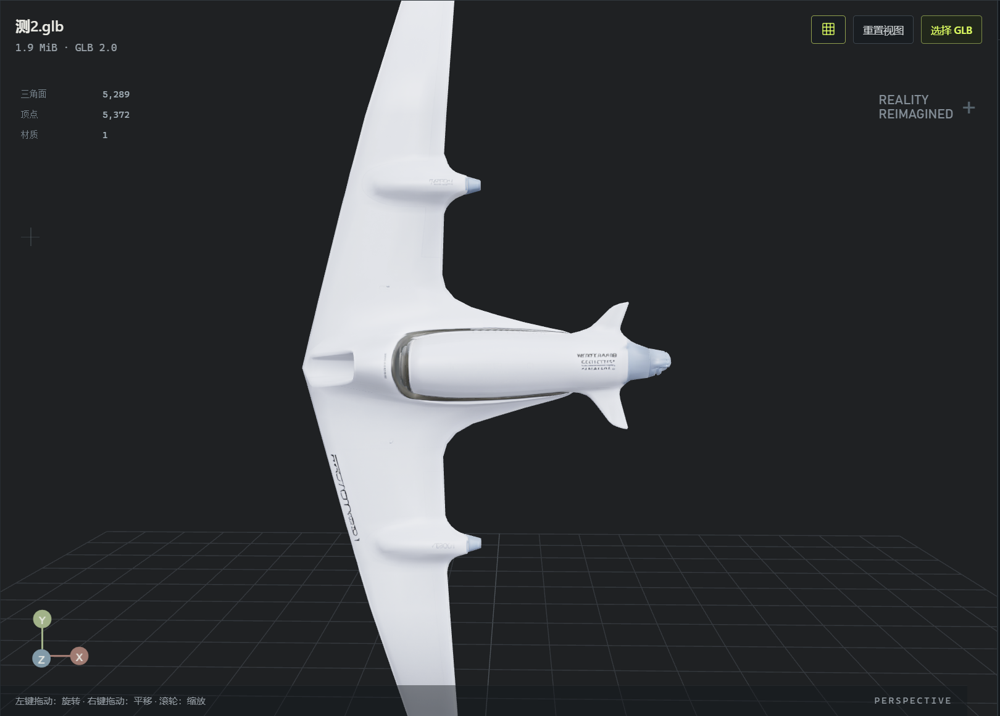
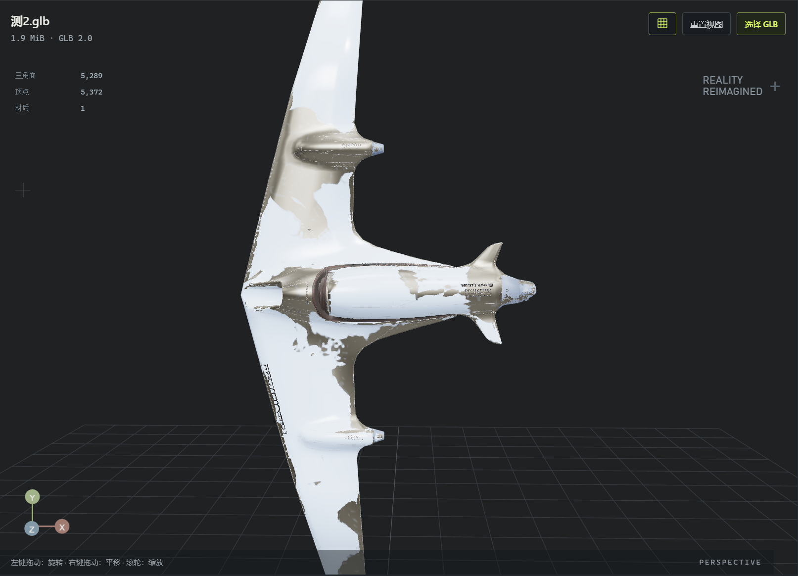

01 / 个人项目 · 技术美术工具
MATEAI 辅助材质分析与程序化做旧
Material Analysis & Texture Editor
生成之后，材质仍然可控。
在使用 AI 建模时，我发现生成后的材质与纹理往往带有较强随机性，难以按意图对局部区域和表面效果进行调整。因此，我开发 MATE，探索如何让生成后的材质处理变得可控。
MATE 将多视角分析、人工审核、真实模型目标绑定与可编辑效果栈连接起来，把 AI 对模型外观的理解，转化为美术可以检查、调整和比较的具体操作。
观看真实操作演示 ↓- 我的角色
- 产品与工作流设计、系统方案、AI 辅助开发、UI 与视觉验收
- 项目背景
- 在校期间的个人探索
独立于实习与公司商业交付 - 当前状态
- 功能原型 / 第一版演示
材质预览可用，纹理输出开发中
从模型导入，到可控材质预览
真实软件录屏 · 中文字幕 · 1 分 52 秒速览
按原时序选取操作片段，保留字幕与实际播放速度。完整流程见下方录屏；当前画面是交互式材质预览，不是已烘焙的输出资产。
观看完整操作录屏 7 分 46 秒 · 可下载
完整保留本次带字幕录屏的流程，转码为适合网页播放的版本。下载完整录屏（约 26.5 MB）
01 / 项目起点
AI 看到了不同表面，
模型却可能只有一个材质槽。
在飞行器测试中，我遇到了一个很具体的问题：白色涂装、玻璃、传感器外壳与贴花，在视觉上是不同区域，文件里却共用一个材质槽。识别出它们，并不意味着已经知道如何分别修改它们。
这让我把产品重点放在“分析之后怎么办”。我需要让用户确认三个问题：材质意图是什么、真正作用在哪个目标、当前数据是否支持这次操作。
因此，MATE 面向的是希望继续编辑已有 GLB 资产的 3D 美术与技术美术学习者。AI 提供初始建议，最终意图与效果控制仍交给使用者。
建议必须可审核
先整理术语和参数，再由用户确认，避免自然语言直接成为执行命令。
作用范围必须可检查
区域、模型目标、UV 与遮罩有明确关系，不能只靠一个视觉标签。
效果必须可反复调整
在同一编辑会话中修改参数、启停图层，并随时与原始资产比较。
02 / 工作流
让每一步都有明确的输入与下一步。
我沿用美术熟悉的制作顺序，把审核、绑定与预检放到真正需要它们的位置。
- 01
导入
打开 GLB，观察模型与资产健康信息。
先理解输入条件 - 02
分析
采集多视角，检查 AI 的区域与材质建议。
建议不直接执行 - 03
配置
审核参数，确认真实目标与局部区域。
检查绑定、UV 和遮罩 - 04
预览
添加掉漆与积灰，调参并比较原始资产。
效果栈保留控制关系 - 05
输出配置
选择分辨率、格式和通道，保存预设。
烘焙与打包尚未完成
03 / 三项核心能力
从理解表面，到控制表面。
AI 材质理解，
以审核为终点。
多视角帮助 Qwen 理解区域和外观。我没有把输出直接交给材质执行，而是先规范术语、校验结构，再进入可编辑材质档案。
用户可以检查分类，修改颜色、粗糙度、金属度与纹理意图，并确认接下来要做什么。
AI 是外部模型接入，不是我训练的专有模型；分析置信度也不等于识别准确率。
查看真实审核界面
先确认改哪里，
再决定怎么改。
我把语义区域绑定到真实模型材质槽。一个槽对应多个区域时，再使用表面遮罩限定范围，并在局部处理前检查 UV 条件。
候选遮罩需要预览、核验和接受。工具把不确定性留在界面上，让使用者能够发现错误分区。
这张截图也暴露了当前问题：传感器区域占据了大部分分配范围。95.5% 是已分配覆盖率，不是分区准确率。
用效果栈迭代，
而不是只接收一张结果图。
掉漆与积灰以独立效果组织，可以添加、删除、启停和调参。覆盖程度、斑块尺度、破碎程度与分布规则分别控制表面变化。
露底的颜色、粗糙度和金属度也可以调整。原始 / MATE 预览切换帮助我判断每一层效果究竟改变了什么。
页面以已录制的掉漆和积灰为重点。其他效果仍在迭代，不作为同等成熟的成果展示。
04 / Material Control After Generation
生成之后的材质控制
我关心的不是再生成一次，而是当初始模型已经存在时，如何继续把它调整到自己想要的状态。


处理预览原始预览同一资产的两张真实截图，按原比例居中显示，用于比较原始与处理后的表面状态。这是截图对比，不是网页内实时渲染。
“少掉一些漆，但保留大斑块。”
覆盖与尺度分开调整，不必为了缩小覆盖范围而同时改变斑块形态。
“增加积灰，但保留底材的反应。”
效果层与露底材质参数分别可调，把颜色变化和粗糙度、金属度联系起来观察。
“看看这一层到底贡献了什么。”
单独启停掉漆或积灰，再与原始资产比较。当前编辑会话保留效果之间的操作关系。
现有程序化预览调参无需每次重新调用 AI 分析；首次分析仍依赖外部模型。完整工程保存和效果栈跨会话恢复，不属于当前已验证能力。
05 / 技术拆解
把“是什么”“在哪里”与“能否执行”分开。
我用分层的数据关系承接 AI 的不确定输出，而不是让一份描述同时承担所有职责。
多视角 AI 建议
术语规范化 · Zod 校验
人工审核 → 材质档案
区域绑定
语义区域 → 真实材质槽
整槽处理 / 局部遮罩
可编辑效果栈
掉漆 · 积灰 · 底材响应
原始 / 处理预览
Manifest · 有哪些目标
从 glTF 源结构描述节点、网格实例与材质槽，提供稳定身份。
Registry · 当前对象在哪里
将稳定目标映射到当前 Three.js 对象，核验引用与生命周期。
执行条件 · 现在能否继续
UV 预检、遮罩接受、版本和过期状态共同限制后续操作。
材质变了，目标不变
目标身份基于 glTF 源索引与场景上下文。材质槽 ID 不包含当前材质索引，因此更换材质不会改变挂点本身。
slot:s0:n0:m0:p0示意：场景 / 节点 / 网格 / primitive 确定材质槽。
旧结果不能覆盖新资产
Worker 任务带有资产与绑定版本、任务身份和取消信号。更换资产或修改绑定后，晚到的结果需要重新验证上下文，失效结果明确标记为过期。
“无法确定”也是有效状态，不应默认为检查通过。
06 / Challenges & Solutions
开发挑战与解决方案
这次开发让我同时面对数据结构、工具交互和视觉质量三类问题。以下按“问题—我的决策—当前结果”记录，保留尚未解决的部分。
01AI 理解如何变成可执行数据？
数据边界
问题自然语言中的“涂装”“金属”等描述，不一定对应内部分类与参数。
决策我在执行前加入术语规范化、结构化校验与人工审核，让用户修正歧义并确认材质档案。
结果与边界已形成建议到审核数据的流程；分析仍可能出错，因此审核是流程的一部分，而不是临时补救。
02多个语义区域共用一个材质槽怎么办？
区域控制
问题直接改动共享槽，会同时影响本应分别处理的表面。
决策我分开管理资产结构、运行时映射与区域绑定，区分整槽处理和局部遮罩处理。
结果与边界绑定与候选遮罩流程已建立；截图中的分配偏差说明，绑定正确不等于像素分区准确，仍需人工核验。
03复杂结构与材质替换后，如何找到同一个目标？
稳定身份
问题共享网格、多 primitive、重复实例与重名节点，使名称或运行时 UUID 不足以代表源目标。
决策使用 glTF 源索引与场景上下文构建身份，核验源结构和运行时对象；材质索引不进入槽身份。
结果与边界阶段记录已有引用、实例、映射与生命周期验证。这支持当前结构设计，但不代表任意资产兼容性保证。
04有 UV0，为什么局部处理仍可能受阻？
UV 预检
问题UV 属性存在，仍可能重叠、越界或退化；结论还受分辨率和计算预算影响。
决策用 Worker 做预检，对共享槽去重检查，明确显示通过、受阻或无法确定，并保留原因与检查条件。
结果与边界已将检查状态接入执行条件。当前负责检测与拦截，不会自动修复或重新展开 UV。
05高面数资产怎样避免重复计算？
共享数据
问题同一几何被多个实例引用时，逐槽重复扫描会放大计算量。
决策复用几何检查结果、缓存共享属性与已有包围信息，按唯一材质槽检查，重型任务使用 Worker 和预算控制。
结果与边界开发记录涉及约 190 万三角面资产的导入、多视角与分析验证。完整实时做旧的帧率、内存和全流程耗时仍待系统测试。
06晚到的异步结果，怎样不干扰当前资产？
生命周期
问题换资产、改绑定或关闭界面后，之前的任务仍可能返回。
决策将版本、任务身份、取消信号和生命周期检查纳入工作流；失效映射清空，过期结果不作为执行依据。
结果与边界取消、晚到结果、重试与卸载已有阶段回归覆盖，后续继续围绕实际编辑中的状态切换验证。
07做旧时，怎样保留文字、贴花与板缝？
源资产保真
问题测试资产把文字、装饰线与部分明暗信息混在 BaseColor 中，覆盖基础色可能一并削弱它们。
决策加入原涂层细节保留控制，并分别使用完整 PBR 资产与仅有 BaseColor 的资产验证质量和兼容性。
结果与边界保留控制仍在完善，需要逐例检查细线与贴花；不能从单张 BaseColor 推断已可靠恢复真实几何或完整物理材质。
08为什么噪声更强，做旧却不一定更自然？
形态层次
问题早期掉漆呈现大块云状分布，边缘层次不足，近景细节偏弱。
决策把分布、尺度、边缘和材质响应分别处理，引入多尺度、结构影响与底材反应，再通过近景观察判断。
结果与边界参数与相关实现已有进展。二次碎边、微缺口、接缝积污和锈蚀联动仍是下一步，不把已有控件等同于最终视觉质量。
09工程通过，是否就意味着画面通过？
验证方法
问题类型检查、回归测试和构建成功，不能证明掉漆自然或材质真实。
决策我将工程检查与人工视觉验收分开，使用固定相机、灯光下的远中近景对照，给不同目标寻找对应证据。
结果与边界第一版展示已形成的工具流程；材质自然度、最终输出和性能仍需各自验证。这也是我继续迭代的判断标准。
07 / 界面与交互设计
让模型保持主角，让状态容易读懂。
我把中央视口留给视觉判断，用左侧阶段导航回答“走到哪一步”，右侧 Inspector 回答“现在能改什么”，底部日志解释“发生了什么”。
把流程做成路径
01–05 阶段提供方向，审核、绑定和预检在相应环节出现。
把状态与原因放在一起
细边框划分面板，黄绿色突出当前操作；不能执行时说明限制。
把参数与结果放在一起
右侧效果栈紧邻模型，支持反复调参、原始对比和中英文切换。
08 / 我的工作
从美术问题出发，
把原型推进到可操作的流程。
作为在校学生，我通过这个个人项目探索技术美术工具开发，主要负责产品方向与工作流设计、功能拆解与系统方案、材质参数控制、UI 与品牌方向，以及测试资产组织和迭代验收。
实现过程使用 AI 辅助开发。我负责梳理需求与约束、检查数据和交互是否连贯，并用真实资产复现问题、验收迭代。对我来说，推进原型的关键是持续判断：工具是否解决了实际问题，每一步是否让使用者看得懂、改得动。
- 桌面与界面
- Electron · React · TypeScript · Vite
- 三维预览
- Three.js · React Three Fiber · Drei
- 数据与计算
- Zod · Web Workers
- AI 理解
- Qwen 视觉模型接入
09 / 迭代与后续方向
流程跑通之后，继续打磨视觉与输出。
近景让我更清楚地看到不足。下面保留当前截图的真实细节，作为下一轮迭代依据，而不是把它包装为最终品质。
当前已展示
可操作的材质原型
GLB 导入、多视角分析、审核与配置、区域绑定、UV 和候选遮罩流程、掉漆与积灰预览，以及输出预设保存。
继续验证
局部质量与适用范围
候选遮罩质量、源涂层保真、近景形态与锈蚀联动；在不同资产上补充预览性能测试，不以单个案例推断普遍效率。
尚未完成
实际纹理输出
纹理烘焙、PBR 贴图输出与资产打包。当前的分辨率、格式与通道选项是可保存的配置，不代表已经导出成品。
对我而言，MATE 的第一版成果，是把“AI 说它是什么材质”，推进到“我知道它作用在哪里，也能继续调整它”。接下来，我会用更严格的视觉对照与输出验证，继续把这套流程做实。